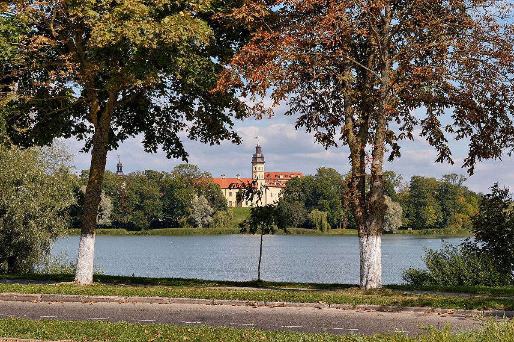
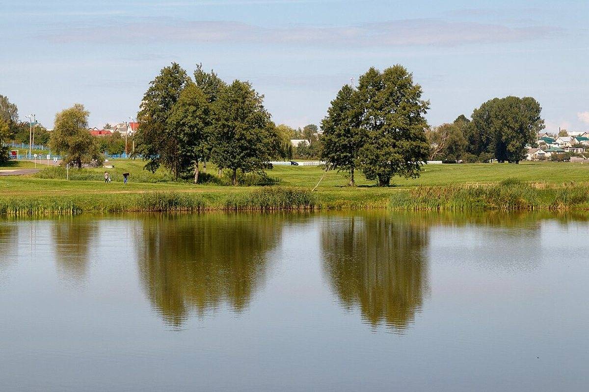
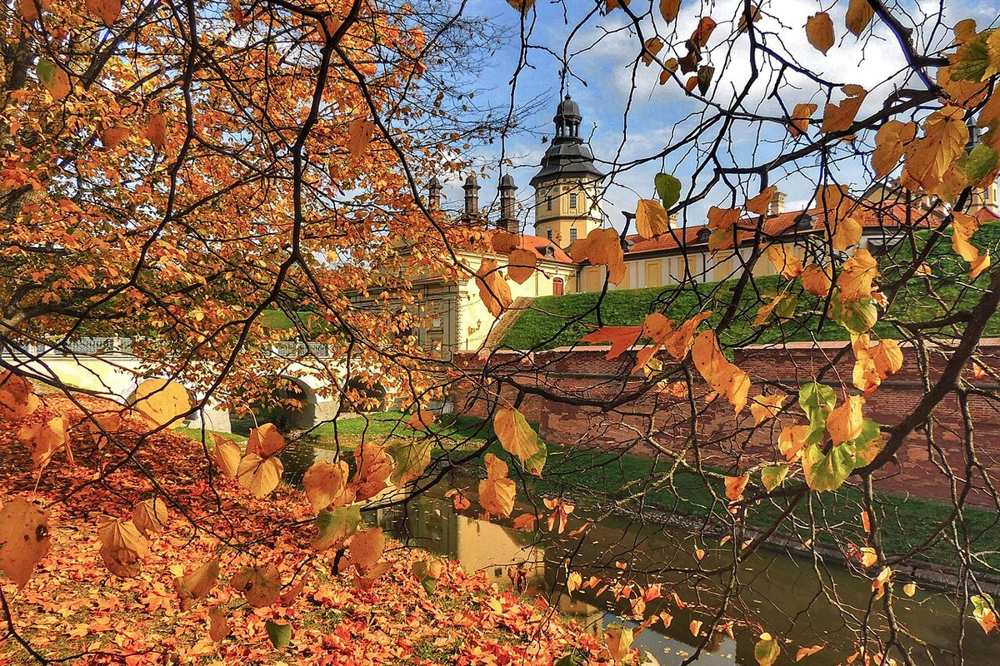

The Radziwill palace and castle complex, one of four Belarusian sites on the UNESCO World Heritage List.
Nesvizh belonged to the Radziwills from 1513. In the late 16th century Mikalai Kryshtaf Radziwill “the Orphan” began building a stone castle on a peninsula between two lakes.
The castle became one of the finest fortresses in the Grand Duchy of Lithuania: a quadrangle with bastions, a moat and water, a palace, an arsenal and a stone building with a watchtower. In 1660 the fortress withstood a two-month siege.
In 1706 the Swedes plundered the castle and destroyed its fortifications. In the 1720s the residence was restored; the palace, arsenal and stone building were linked by galleries. In 2005 the complex was inscribed on the UNESCO World Heritage List.
Since 1993 the Nesvizh museum-reserve has operated here. After restoration in 2012, an updated palace exhibition opened to visitors.


